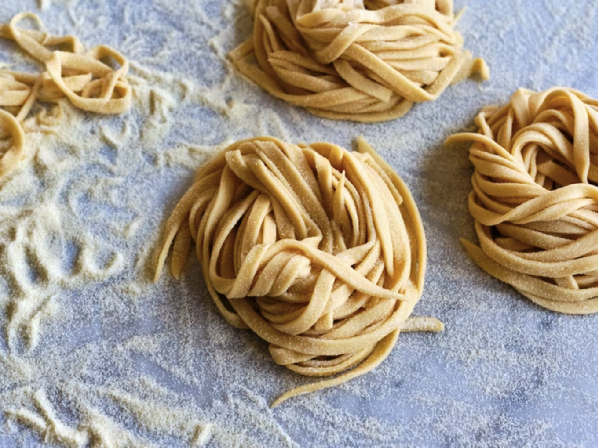

Step 1
Start by making a mound of the flour directly on the countertop. Make a deep crater in the top and add the eggs, olive oil, and salt.
Step 2
Use a fork to break up the eggs without breaking through the walls of your mound.Try to keep the eggs contained but it's not problem if they break. Use a spatula or bench scraper to work them back in. Work more flour into the eggs a little at a time. Drizzle 2 tbsp of cold water across the mixture and keep mixing until you've got a dough coming together
Tip: One of the best ways to add water to fresh pasta dough is by spray bottle. You don't want the dough too wet.
Step 3
Use your hands to bring the dough together into a bag and knead for 7-10 minutes, until the dough is silky smooth and elastic.See picture below for reference
Transfer the cut pasta to a floured baking sheet, swirled into little nests. Repeat with the remaining dough.
When you’re ready to cook the pasta do it in a large pot of well-salted water. Depending on the thickness and shape of your pasta, this might just take a minute or so. Pasta made with a high percentage of semolina flour or whole-grain flours will take a bit longer to cook than pasta made with “00” flour. Reserve a cup or two of the pasta water (in case you want to use it for a sauce), drain the pasta, and use immediately.